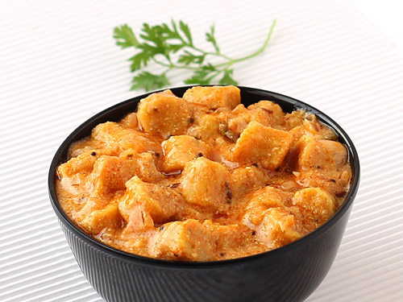

Gatte Ki Sabzi is a delicious and healthy Rajasthani recipe made with gram flour dumplings and a spicy gravy. This is a very popular dish in Rajasthan and is served with roti or rice.

Ingredients
For Gatte
1 CupBesan
1/2 TspCoriander Seeds(Crushed)
1/4 TspAjwain / Carom Seeds
1/4 TspTurmeric
1/4 TspKashmiri Red Chilli Powder
A Pinchof Hing
1/4 TspSalt
2 TbspCurd
2 TbspWater
For Sabzi
2 TbspOil
1 Tspcumin / jeera
1 Tspkasuri methi / dry fenugreek leaves
1 bayleaf / tej patta
1/2 tspfennel / saunf
pinchhing / asafoetida
1onion (finely chopped)
1 tspginger garlic paste
1/4 tspturmeric
1/2 tspcoriander powder
1/4 tspcumin powder / jeera powder
1 cup curd / yogurt (whisk)
1/2 tspsalt
1/4 tsp garam masala
2 tbspcoriander (finely chopped)
Preparation
firstly, in a large kadai heat 2 tbsp oil and saute spices.
further, add 1 onion, 1 tsp ginger garlic paste and saute to golden brown.
keeping the flame on low, add spices and saute well.
furthermore, add 1 cup water and 1 cup curd. stir continuously until the mixture comes to a boil.
now add prepare gatte (gram flour dumplings) and ½ tsp salt. mix well.
cover and boil for 5 minutes.
additionally, add ¼ tsp garam masala and 2 tbsp coriander. mix well.
finally, serve gatte ki sabji with roti, phulka or naan.